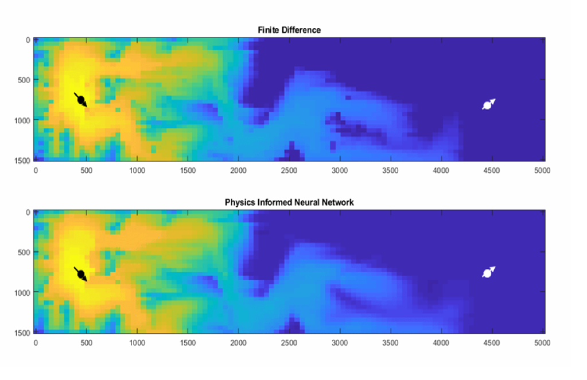

My Master's thesis
Simulation of fluid dynamics using Physics-Informed Neural Networks
My master's thesis is on physics-informed neural networks. Fluid mechanics is a very demanding area of physics. The mathematical description of fluid flow consists of complex partial differential equations that do not have analytical solutions. To conduct a simulation, numerical solutions must be used, which are computationally expensive. This is where PINNs come in – by using neural networks, we can attempt to approximate the function that serves as a solution for certain boundary conditions. Such a solution is faster and more convenient. But is it better? That is what I will try to find out!